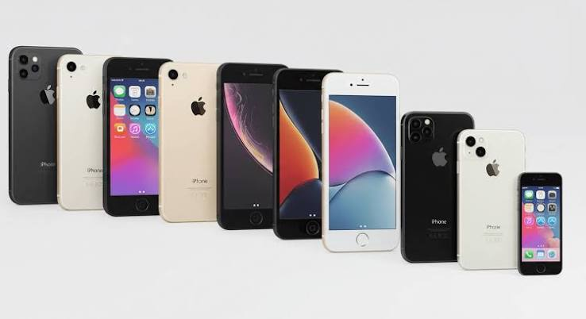
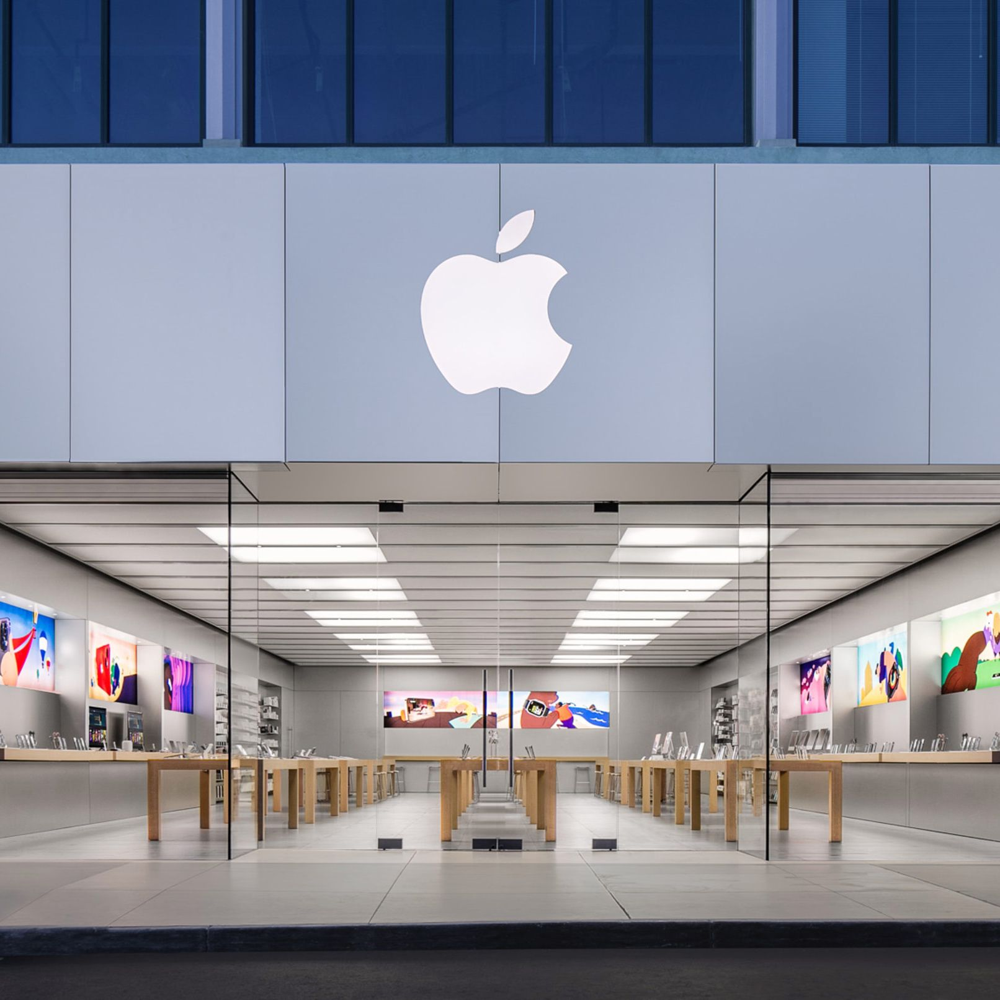

Unlike most large corporations, Apple prioritizes functionality and hardware integration rather than individual product lines. Thousands of projects are rejected so their main focus is on perfecting the projects they are working on. Apple's commitment to innovation has resulted in high-quility technology that has changed multiple industries for the better.
Apple thrives on collaboration and values the contributions of its employees and partners. The leaders of the company meet weekly to discuss strategies and initiatives. This ensures that all properties within the organization are handled with properly. Without support from its community, Apple would not thrive like it does today. Apple also collaborates with specialized internal teams to have a mix of perspectives.

Apple designs its products with the goal of providing easy access to its services for all users. Products are built with assistive tools for individuals with disabilities or other needs. Apple also guantees built in privacy to ensure control over personal data is maintained individually. Apple's services include a comprehensive suite of digital services to accomodate for individuals all around the world. Apple is a very innovative company and is determined to serve its customers to the best of its ability.